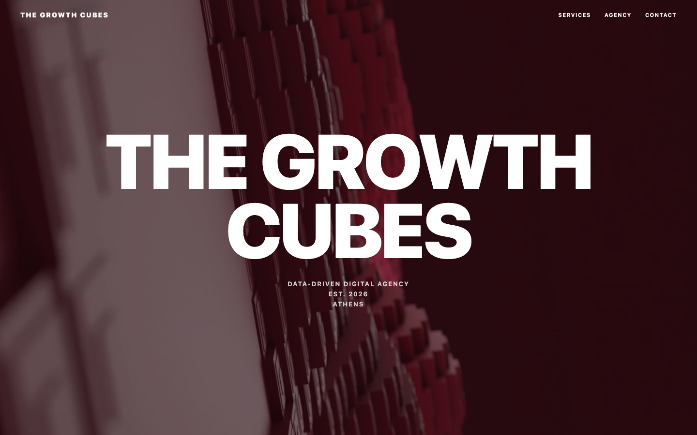
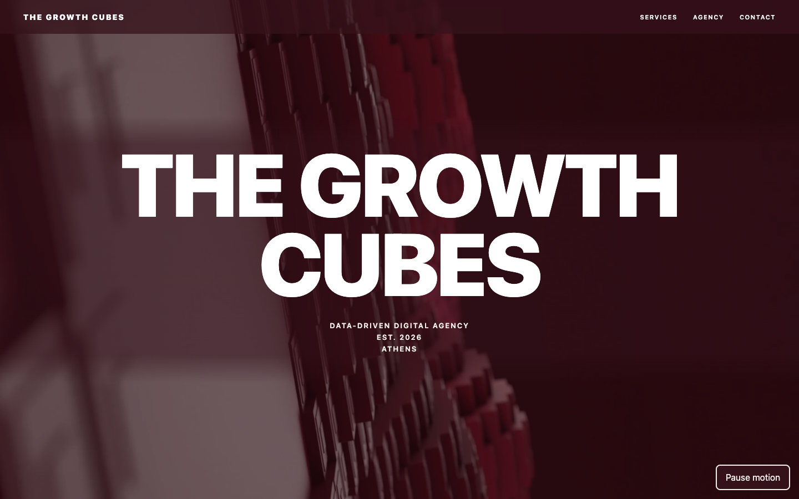

Local development review against Git revision a37e645. Video frames are frozen at one second for comparison. Scroll interactions are tested separately in comparison.json. This is not final production or DYPA compliance evidence.

